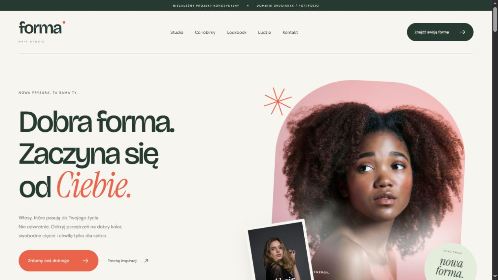
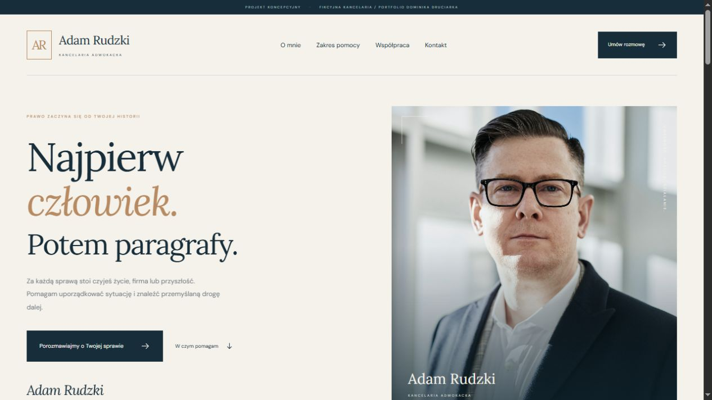
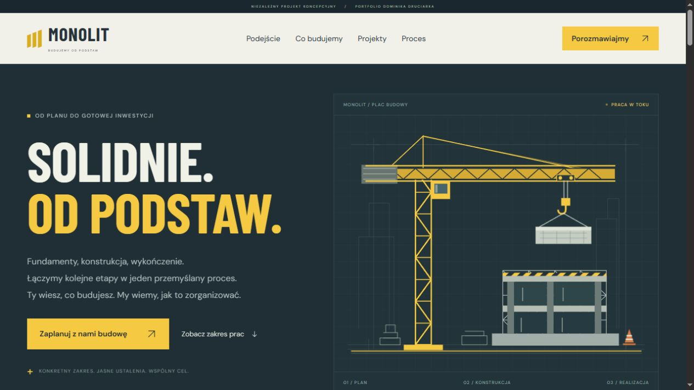
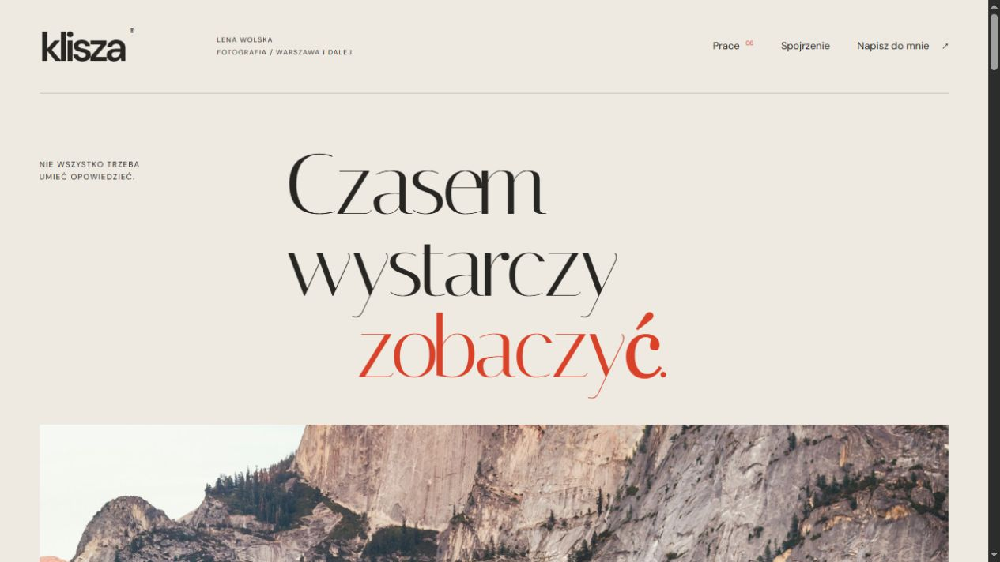

01 / MotoryzacjaOtwórz projekt

TORQUEAuto Serwis
Mocna typografia, ciemna oprawa i oferta, która prowadzi prosto do zgłoszenia serwisowego.
Zobacz, jak łączę wygląd, treść i funkcje w strony dopasowane do różnych branż.
Mocna typografia, ciemna oprawa i oferta, która prowadzi prosto do zgłoszenia serwisowego.

Lekka, świeża strona salonu. Duże zdjęcia, lookbook i przemyślany sposób prezentacji usług.

Spokojny, profesjonalny wizerunek kancelarii. Czytelny zakres pomocy i komunikacja skupiona na człowieku.

Industrialny charakter, animowany żuraw i konkretna oferta. Strona pokazuje budowę od planu po efekt.

Portfolio w formie wizualnego magazynu. Asymetryczne kadry, autorska typografia i przestrzeń dla zdjęć.
Nie ma projektu pasującego do tych kryteriów.
Spróbuj innej frazy albo pokaż wszystkie realizacje.
Autorskie projekty koncepcyjne prezentujące możliwości projektowe. Kliknij podgląd, aby zobaczyć działającą stronę.